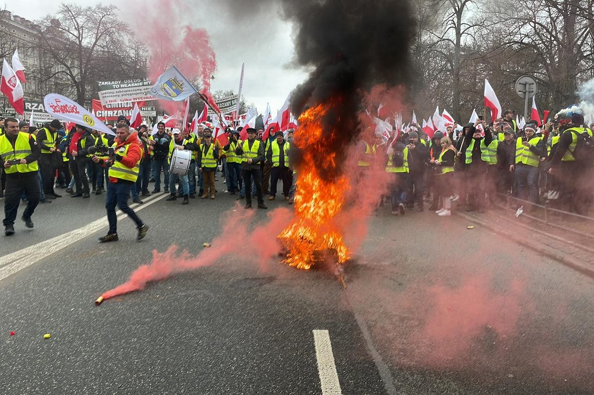

Relacja z generalnego strajku rolników
W całym kraju nadal trwa strajk rolników. Największa jak do tej pory demonstracja odbyła się w środę 6 marca w Warszawie. Wtedy to rolnicy, myśliwi i pszczelarze, razem z działaczami związków Solidarności przybyli do Warszawy, aby pokazać swój sprzeciw unijnej polityce klimatycznej, zwanej ,,Zielonym Ładem” i niekontrolowanemu napływowi produktów rolno-spożywczych z Ukrainy.
Strajk rozpoczął się o godzinie 11 i na początku przebiegał spokojnie. Protestujący zebrali się w kilku miejscach stolicy, największe zgromadzenie miało miejsce pod kancelarią prezesa rady ministrów, a później w okolicach sejmu. Wszystkie zgromadzenia zabezpieczała policja. W pewnym momencie sytuacja zaczęła eskalować. Mówi się, że punktem kulminacyjnym była interwencja strażaków, którzy chcieli ugasić podpaloną przez rolników oponę. Gdy tłum się na to nie zgodził i zaczął atakować strażaków, doszło do starć z policją. Mundurowi skorzystali z środków przymusu bezpośredniego w postaci pałek służbowych, gazu łzawiącego i siły fizycznej. W wyniku tych starć strajk rozwiązano, rannych zostało kilku policjantów.
Po strajku pojawiły się głosy o przebywających w tłumie policyjnych prowokatorach. Mieli oni podjudzać tłum do ataków na funkcjonariuszy i samemu rzucać kostką brukową w policję. Są to informacje niepotrwierdzone, którym rzecznicy policji zaprzeczają.
W czasie strajku premier Donald Tusk zaprosił rolników na spotkanie w Centrum Partnerstwa Społecznego "Dialog", które odbyło się w sobotę 9 marca. Po spotkaniu wiemy że strony nie doszły do porozumienia, premier zadeklarował pewne ustępstwa w sprawie Zielonego Ładu, ale rolników to nie usatysfakcjonowało.